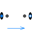

RoughnessReal type for roughness of a pipe |
|
Information
This information is part of the Modelica Standard Library maintained by the Modelica Association.
This Real type defines the absolute roughness of the inner surface of a pipe or fitting, i.e., the absolute average height of surface asperities. It has usually to be estimated. In [Idelchik 1994, pp. 105-109, Table 2-5; Miller 1990, p. 190, Table 8-1] many examples are given. As a short summary:
| Type of pipe | Roughness | |
| Smooth pipes | Drawn brass, copper, aluminium, glass, etc. | 0.0025 mm |
| Steel pipes | New smooth pipes | 0.025 mm |
| Mortar lined, average finish | 0.1 mm | |
| Heavy rust | 1 mm | |
| Concrete pipes | Steel forms, first class workmanship | 0.025 mm |
| Steel forms, average workmanship | 0.1 mm | |
| Block linings | 1 mm | |
References
- Idelchik I.E. (1994):
- Handbook of Hydraulic Resistance. 3rd edition, Begell House, ISBN 0-8493-9908-4
- Miller D. S. (1990):
- Internal flow systems. 2nd edition. Cranfield:BHRA(Information Services).
Type Information
| Real |
Quantity: Length Unit: m Display Unit: mm Restricted Range: 0 to +Inf |
|---|
Used in Components (9)
|
Modelica.Fluid.Examples.HeatExchanger.BaseClasses
Simple heat exchanger model |
|
|
Modelica.Fluid.Pipes.BaseClasses
Base class for straight pipe models |
|
|  |
Modelica.Fluid.Pipes.BaseClasses
Base class for distributed flow models |
|
Modelica.Fluid.Pipes.BaseClasses.FlowModels
Base class for momentum balances in flow models |
|
|
Modelica.Fluid.Pipes.BaseClasses.HeatTransfer
base class for any pipe heat transfer correlation |
|
|
Modelica.Fluid.Pipes.BaseClasses.WallFriction
Pressure loss in pipe due to wall friction and gravity (only for test purposes; if needed use Pipes.StaticPipe instead) |
|
|
Modelica.Fluid.Fittings.BaseClasses.QuadraticTurbulent
Pressure drop in pipe due to wall friction (only for test purposes; if needed use Pipes.StaticPipe instead) |
|
|
Modelica.Fluid.Fittings.BaseClasses.Bends.CurvedBend
Geometric data for a curved bend |
|
|
Modelica.Fluid.Fittings.BaseClasses.Bends.EdgedBend
Geometric data for a curved bend |